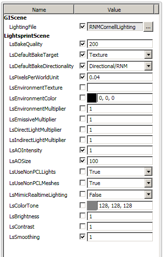

LightSpeed 3.1.1
Lightsprint SDK adds global illumination to Gamebryo LightSpeed 3.1.1.
Prerequisites
- Emergent's
Gamebryo LightSpeed 3.1.1must be installed - Fixed Global Illumination Package must be installed
- Lightsprint SDK with LightSpeed integration. To save your time, we send you Lightsprint SDK preconfigured for your engine. If we make mistake and your integration is missing, please let us know.
Features
- Toolbench plugins let you bake global illumination in HDR, results are immediately displayed in WorldBuilder
- illumination can be baked to lightmaps, directional lightmaps (a.k.a. radiosity normal maps), vertex colors
- fully automatic, quality controlled by single number, optional settings in Lightsprint Model Library (HDR or LDR environment map etc)
- postprocessing: color tone, brightness, contrast, smoothing can be changed in a second
- baking GI for multiple scene configurations at once
- no size limits, can process huge scenes in 64bit code, even in 32bit Toolbench
- Lightsprint tools and samples (baking, realtime GI) support .gsa, old Gamebryo scene format (this may be dropped in future, depends on your feedback)
- realtime GI in Gamebryo scenes can be displayed using Lightsprint renderer
- all data can be processed in native Gamebryo format in memory, no conversion/duplication/saving to disk
- full integration source code included
Limitations of current version
- GI Package 2.1.1 has several issues, currently being adressed, with fix expected soon:
- Results of baking may fail to appear or save to disk. One of these may help to workaround the issue: 1) Click Toggle Precomputed Lights icon. 2) Click Toggle Default Lights icon. 3) Unset and set LightingFile in GIScene. 4) Reopen block. 5) Bake again.
- Plugin request to display GI after bake is ignored. Click "Toggle Precomputed Lights" icon manually.
- Terrain lightmaps not supported. This is long term GI Package limitation.
- Light probes not updated. We will support them in next GI Package.
Baking in Toolbench
- Run
bin/install_toolbench_plugins.bat. - Run Toolbench (default configuration VC90/Shipping).
- preconfigured examples
- Open sample scene in Lightsprint SDK
data\Lightspeed\GameFrameworkSample.gsl - Open WorldBuilder by doubleclicking .block file in game solution, pick Cathedral for bigger or CornellBox for smaller scene.
- GI is already present. You can rebuild it by clicking menu Lightsprint / Bake lighting.
Small window shows baking progress and lets you abort operation.
Baking at default medium quality takes around 10s for CornellBox, 2min for Cathedral.
Computed GI appears in WorldBuilder and it is also saved to disk immediately.

- Click any LightsprintScene or LightsprintMesh entity to access bake settings, see below. If you change settings, bake again to see lightmaps change.
- using Lightsprint Model Library
- Using LightsprintScene and LightsprintMesh models instead of GIScene and PCLMesh will give you access to important bake settings. 

- LightsprintModelLibrary and GIModelLibrary must be copied to and then referenced from your solution. It is already done in our samples. Game Solution Wizard offers to do it automatically for new projects. For old projects, manually copy
$(EMERGENT_PATH)\Media\GIModelLibraryandEMERGENT_PATH%\sdk\Win32\Bin\VC90\Shipping\Plugins\Lightsprint.Toolbench.Plugin\LightsprintModelLibrarydirectories next toStandardModelLibraryin your asset web, then open your solution in Toolbench, doubleclick .block file in Game Solution panel, expand it, right click References under .block file, select Add Reference, enterLightsprintModelLibrarydirectory and selectLightsprintModelLibrary.emtproj. Add reference to GIModelLibrary in the same way.
- configuring your scenes
- If your scene alredy contains GIScene entity, transmogrify it to LightsprintScene, otherwise create new LightsprintScene.
- If some of your meshes need non-default settings, transmogrify them to LightsprintMesh-es.
- Adjust settings in LightsprintScene and LightsprintMesh entities. Note that default quality is low, per-vertex.
- Run Lightsprint / Bake lighting as usual.
- mixing realtime and precomputed illumination
- LightSpeed supports rendering realtime direct and precomputed indirect illumination.
- To bake indirect illumination only, set light properties UseForPrecomputedLighting, LightPCLObjectsAtRuntime and LightNonPCLObjectsAtRuntime to true.
- excluding lights and meshes from GI solution
- To exclude PCL mesh or light, set UseForPrecomputedLighting=false.
- To exclude non-PCL mesh, set IsCastingShadow=false.
- To exclude all non-PCL meshes, set LsUseNonPCLMeshes=false in LightsprintScene.
- To exclude all non-PCL lights, set LsUseNonPCLLights=false in LightsprintScene.
- lightmap resolution
- LightsprintScene and LightsprintMesh properties let you control lightmap resolution globally and then tweak it for individual meshes.
- For fixed resolution, change mesh property LsResolutionMode to "Use Fixed Resolution".
- If LsResolutionMode stays at default "Calculate from LsPixelsPerWorldUnit*LsResolutionMultiplier", resolution is calculated in 4 steps:
- When building lightmap for mesh, we look at mesh surface and calculate lightmap resolution so that there is LsPixelsPerWorldUnit lightmap pixels in 1 length unit of surface. Lightmap may be stretched differently in different parts of mesh, so we average this measurement over all edges of the mesh.
- Then, resolution is multiplied by LsResolutionMultiplier.
- Then, resolution is rounded up to power of two. If you have use for non power of two resolutions, we will add checkbox to disable rounding.
- Finally, resolution is limited to be >=32 and <=2048. Let us know if you want to change these limits, we will expose them in LightsprintScene.
- lightmap cache
- located in (temp)/LightmapCache/(block_name)
- how does it work?
- "Bake lighting"/"Bake selected" calculates lighting, saves raw .exr lightmaps to cache (overwriting previous cache contents) and saves postprocessed lightmaps to Gamebryo's .nif
- "Bake from cache"/"Bake selected from cache" reads raw lightmaps from cache and saves postprocessed lightmaps to Gamebryo's .nif
- serves three purposes
- Makes postprocessing near instant. Once cache is filled by "Bake lighting", you can change color tone, brightness, contrast, smoothing and compression and apply changes by "Bake lighting from cache".
- Lets you look at lightmaps. Once cache is filled by "Bake lighting", you can look at lightmaps in any modern image viewer. (Note that there are no tools for looking at lightmaps in Gamebryo's .nif).
- Lets you edit lightmaps. Once cache is filled by "Bake lighting", you can edit cached lightmaps and apply results to scene by "Bake lighting from cache".
- can be disabled by deleting
#define LIGHTMAP_CACHEfromLightsprint.Toolbench.Plugin.cppand rebuilding plugin
- baking selected entities
- commented out in src/Lightsprint.Toolbench.Plugin.UI/plugin.xml due to bug in GI Package 2.1.1
- ready for GI Package Next
- "Bake selected" and "Bake selected from cache" update lighting only for entities selected in World Builder
- baking multiple configurations at once
- LightsprintMesh properties LsReplacementCase and LsReplacementConfiguration let you define multiple scene configurations
- GI is automatically baked for all configurations at once, without increasing baking time
- reducing bake time
- Baking time depends nearly linearly on quality and number of texels and vertex colors calculated.
- Reduce number of texels calculated. Make all lightmaps smaller by reducing LsPixelsPerWorldUnit. Bake and if lighting errors (leaks) show up or lighting is too blurry, increase lightmap sizes in objects that need it.
- Select hi-poly meshes and change LsBakeTarget to Vertices. Bake and if lighting is too blurry, change target back in objects that need it.
- Decrease quality and compensate it by increasing smoothing.
- Use lower quality/resolution for non final builds.
- Use faster CPU. Performance increases nearly linearly with number of cores.
Preparing art assets
- Lightsprint SDK integration includes sample scenes (Cathedral, CornellBox) that work out of the box. When preparing new scene for baking, one must follow Gamebryo rules:
- Due to GI Package 2.1.1 bug, LightMapMaterial is not available in 3ds Max out of the box. To fix it, open GI Package solution in VS 2005 (usually
C:\Emergent\Integrations\LightSpeed_GlobalIllumination_2.1.1\Build\Win32\VC80\Gamebryo_GI.sln), change configuration to Shipping DLL and rebuild. - See GI Package documentation, usually installed at
C:\Emergent\Integrations\LightSpeed_GlobalIllumination_2.1.1\Documentation\GI Package Documentation.pdf - See video tutorial at https://pulse.emergent.net/index.php?autocom=downloads&showfile=288, it shows how to set up your objects to receive light maps in your art tool. While other parts of the tutorial are Gamebryo 2.6 specific, this part is still relevant for Gamebyo 3.1.1.
- Note that you need meshes with unwrap uv channel only for baking GI into lightmap textures. If you don't have unwrap, you can still set LsBakeTarget=Vertices and bake GI into vertices.
Legacy .gsa support
- our tools from Gamebryo 2.6 integration still work under LightSpeed
- this includes both offline and realtime GI
- note that our legacy samples read scenes from Gamebryo 2.6 and GI Package 1.0.0 directories, those must be installed for samples to work


Legacy Lightspeed support
- SDK includes source code of Toolbench plugins, you can build it with any Lightspeed 3.x and GI Package 2.x version installed (possibly with minor modifications, we stopped testing old versions).
- Before building plugins in legacy environment, make sure that legacy DirectX SDK is used (Gamebryo 2.6 requires DirectX SDK aug08, 3.0 requires nov08, 3.1. requires mar09, 3.1.1 requires aug09), you may need to modify paths in Lightsprint.Toolbench.Plugin.vcproj.
Source code
- if you are full source code licensee, open
src/Lightsprint.vs2010.slnand build 64bit Release DLL BuildLightmaps - open
src/Lightsprint.vs2008.sln - see
Lightsprint.Toolbench.PluginandLightsprint.Toolbench.Plugin.UIprojects, feel free to customize them or tell us what needs to be changed to match your needs - for standard VC90/Shipping Toolbench, build plugins in Shipping DLL Win32 configuration
- if you build Debug DLL or Release DLL Win32 plugins, use them by running VC90 Debug / Release Toolbench
- Gamebryo does not support 64bit plugins, so x64 configurations have plugin build disabled
- compilation of plugins invokes
bin/install_toolbench_plugins.batthat installs plugins together with 32bit and 64bit BuildLightmaps tool (plugin calls 64bit BuildLightmaps in 64bit Windows, 32bit in 32bit) - let us know if you need projects for different compiler version
Deployment
bin/install_toolbench_plugins.batinstalls plugins and model library to Toolbench. It simply copies files from Lightsprint SDK.- If you modify and rebuild plugins, they are installed automatically.
- Everything plugins need is in their Toolbench directories, Lightsprint SDK is not needed, so deployment to other computers is simple directory copy. Plugin directories are (in case of standard VC90 Shipping configuration)
$(EMERGENT_PATH)\sdk\Win32\Bin\VC90\Shipping\Plugins\Lightsprint.Toolbench.Pluginand$(EMERGENT_PATH)\sdk\Win32\Bin\VC90\Shipping\Plugins\Lightsprint.Toolbench.Plugin.UI.